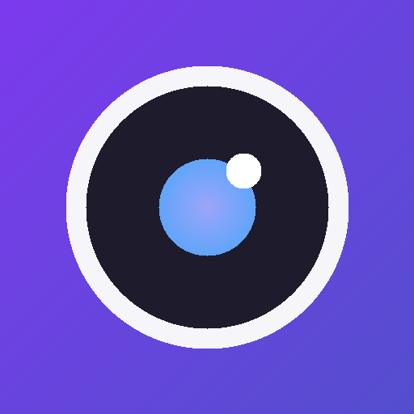

Use a câmera do celular no Zoom, Meet, Teams e Discord. Abre os dois apps, escaneia o QR Code e pronto — vídeo em alta qualidade pela sua rede local.
Três passos. Sem cadastro, sem servidor externo, sem instalar drivers manualmente.
O app no PC (Linux ou Windows) e o app no celular (Android). O instalador do PC já configura tudo sozinho.
Abra os dois na mesma rede WiFi e escaneie o QR Code que aparece no PC. Conecta na hora.
Clique em “Iniciar Webcam Virtual” e selecione Phone Webcam no Zoom, Meet, Teams ou Discord.
Escolha sua plataforma. O celular é sempre Android; o PC pode ser Linux ou Windows.